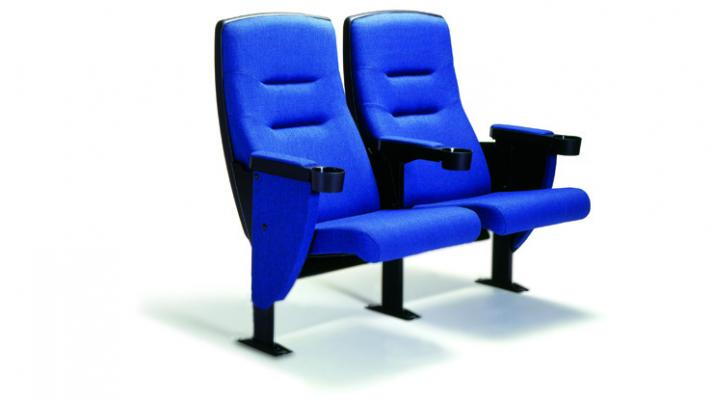
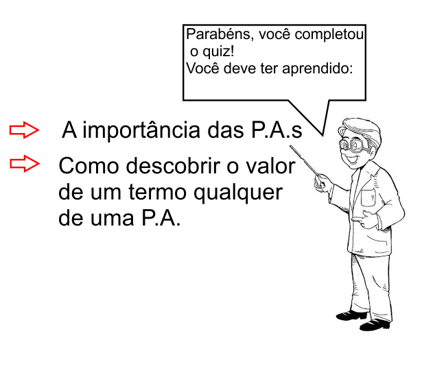

1. Um teatro tem 18 poltronas na primeira fila, 24 na Segunda, 30 na terceira e assim na mesma sequência, até a vigésima fila que é a última. O número de poltronas desse teatro é?
2. Nos quilômetros 31 e 229 de uma rodovia estão instalados telefones de emergência. Ao longo da mesma rodovia e entre estes quilômetros pretende-se instalar 10 outros telefones de emergência. Se os pontos adjacentes de instalação dos telefones estão situados a uma mesma distância, qual é esta distância, em quilômetros?
3. Uma criança anêmica pesava 8,3 kg. Iniciou um tratamento médico que fez com que engordasse 150 g por semana durante 4 meses. Quanto pesava ao término da 15a semana de tratamento?
4. Calcule a soma dos 38 primeiros termos da P.A. (12, 5, 2, ...).
5. Um terrreno será vendido através de um plano de pagamentos mensais em que o primeiro pagamento de R$ 500,00 será feito 1 mês após a compra, o segundo de R$ 550,00 será feito 2 meses após a compra, o terceiro de R$ 600,00 será feito 3 meses após a compra, e assim por diante. Sabendo que o preço total do terreno é de R$ 22 550,00, qual é o número de prestações mensais que devem ser pagas?
